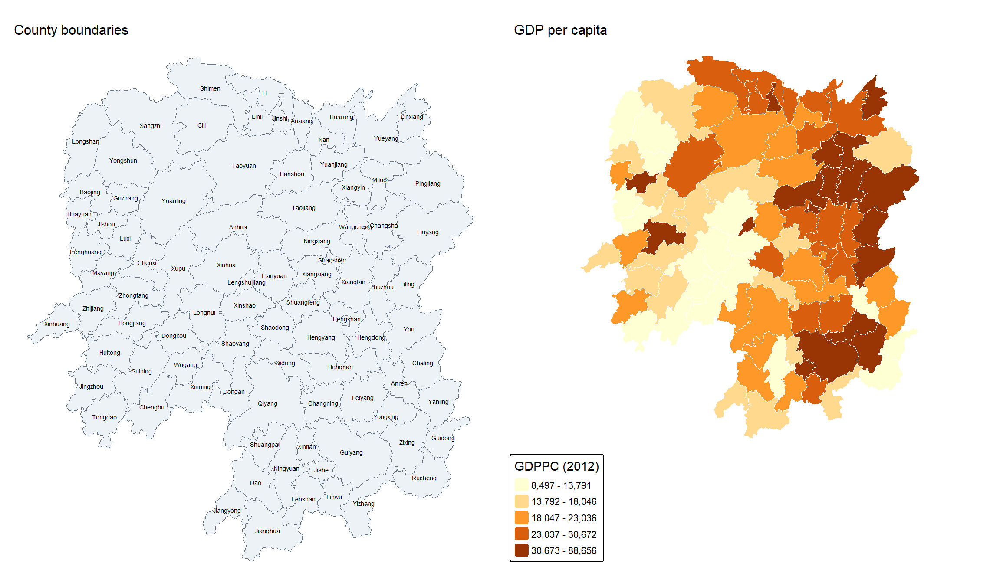
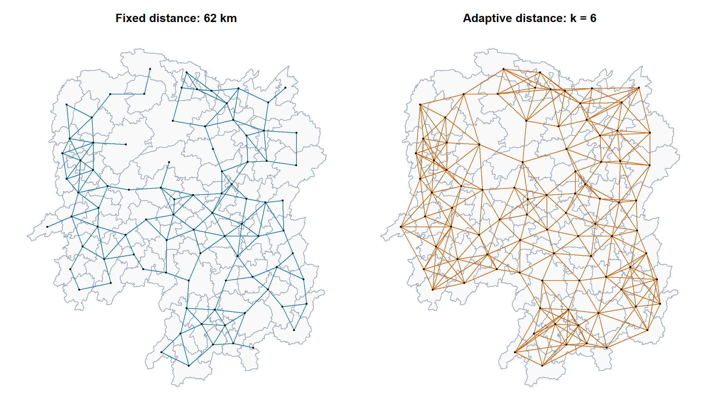
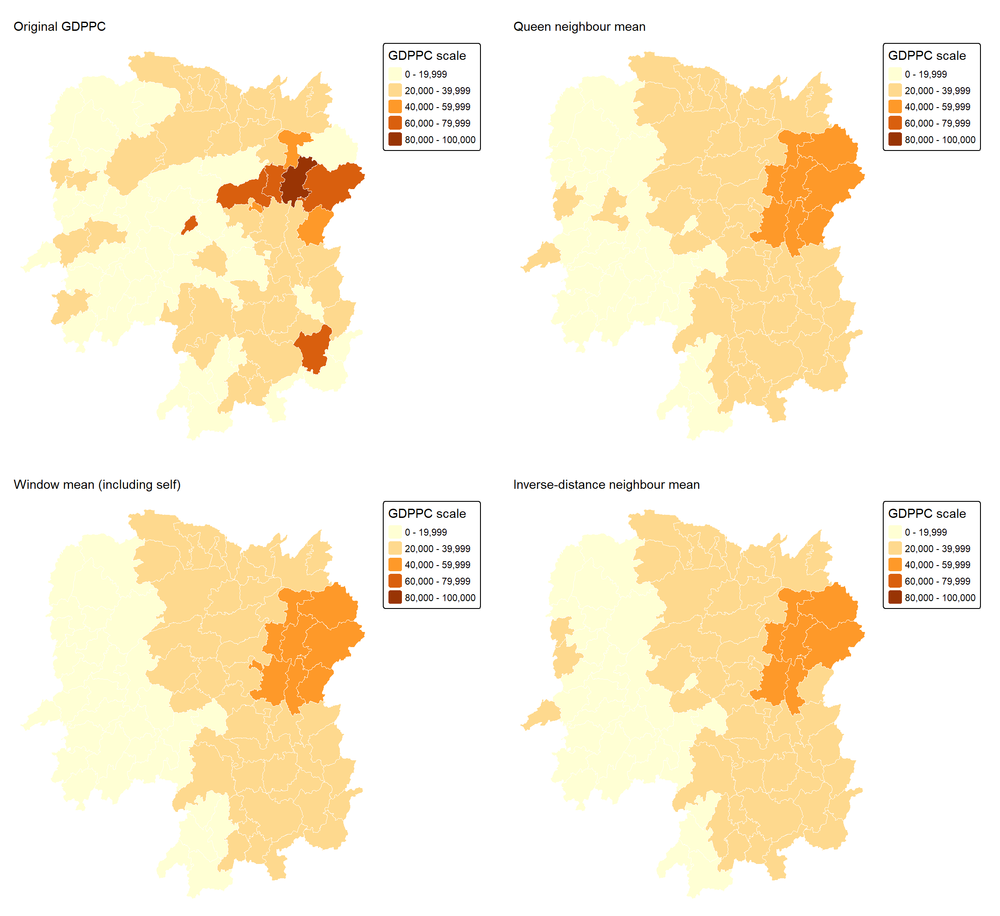
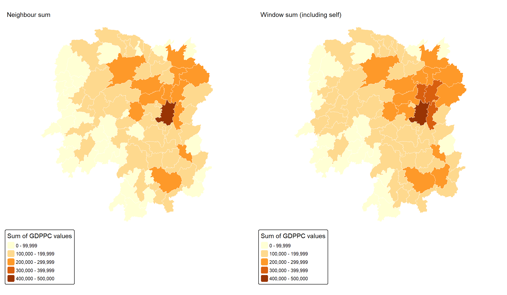

Show code
library(sf)
library(spdep)
library(tmap)
library(dplyr)
library(readr)
library(knitr)
tmap_mode("plot")JUNCHEN LI
September 16, 2026
September 16, 2026
This exercise follows Chapter 8: Spatial Weights and Applications. It uses Hunan county boundaries and the 2012 development indicators to explore how different definitions of a neighbour affect spatial summaries. The workflow covers contiguity, distance bands, nearest neighbours, inverse-distance weights and four spatial-lag operations.
The files were downloaded from the instructor’s ISSS626-AY2026-27Aug repository on 16 September 2026. The download script pins the repository commit, so future changes to the online course will not silently replace this input. The indicator year remains 2012; it is not the year of download. No newer statistical series has been substituted.
| Local file | Purpose |
|---|---|
data/geospatial/Hunan.shp and companion files |
County polygons and identifiers |
data/aspatial/Hunan_2012.csv |
County development indicators for 2012 |
data/download-data.R |
Retrieve the pinned source files into an empty data location |
data/download-manifest.txt |
Source URLs, retrieval date and raw-file checksums |
The join uses an explicit county key. Duplicate keys or unmatched counties would invalidate the positional relationship between observations and weights, so the checks stop execution rather than silently continuing.
hunan_boundary <- st_read("data/geospatial/Hunan.shp", quiet = TRUE)
hunan2012 <- read_csv("data/aspatial/Hunan_2012.csv", show_col_types = FALSE)
raw_files <- c(list.files("data/geospatial", full.names = TRUE),
"data/aspatial/Hunan_2012.csv")
raw_md5 <- tools::md5sum(raw_files)
stopifnot(nrow(hunan_boundary) == 88L, nrow(hunan2012) == 88L,
!anyDuplicated(hunan_boundary$County),
!anyDuplicated(hunan2012$County),
setequal(hunan_boundary$County, hunan2012$County),
all(st_is_valid(hunan_boundary)),
!any(st_is_empty(hunan_boundary)),
st_is_longlat(hunan_boundary))
hunan <- left_join(hunan_boundary,
select(hunan2012, County, GDPPC),
by = "County", relationship = "one-to-one") |>
select(NAME_2, ID_3, NAME_3, ENGTYPE_3, County, GDPPC)
stopifnot(identical(hunan$County, hunan_boundary$County),
all(is.finite(hunan$GDPPC)), all(hunan$GDPPC > 0))
data.frame(Counties = nrow(hunan), Indicator_year = 2012,
Missing_GDPPC = sum(is.na(hunan$GDPPC)),
Valid_geometries = sum(st_is_valid(hunan))) |> kable()| Counties | Indicator_year | Missing_GDPPC | Valid_geometries |
|---|---|---|---|
| 88 | 2012 | 0 | 88 |
| NAME_2 | ID_3 | NAME_3 | ENGTYPE_3 | County | GDPPC |
|---|---|---|---|---|---|
| Changde | 21098 | Anxiang | County | Anxiang | 23667 |
| Changde | 21100 | Hanshou | County | Hanshou | 20981 |
| Changde | 21101 | Jinshi | County City | Jinshi | 34592 |
| Changde | 21102 | Li | County | Li | 24473 |
| Changde | 21103 | Linli | County | Linli | 25554 |
| Changde | 21104 | Shimen | County | Shimen | 27137 |
The identifier map establishes the spatial units. The second map displays the supplied GDP-per-capita field. Values retain the source scale; no inflation adjustment or currency conversion is applied. The maps use the current tmap 4 interface.
county_map <- tm_shape(hunan) +
tm_polygons(fill = "#edf2f7", col = "#64748b", lwd = 0.5) +
tm_text("NAME_3", size = 0.45) +
tm_title("County boundaries", size = 1) +
tm_layout(frame = FALSE)
indicator_map <- tm_shape(hunan) +
tm_polygons(fill = "GDPPC",
fill.scale = tm_scale_intervals(style = "quantile", n = 5,
values = "brewer.yl_or_br"),
fill.legend = tm_legend(title = "GDPPC (2012)"),
col = "white", lwd = 0.5) +
tm_title("GDP per capita", size = 1) +
tm_layout(frame = FALSE, legend.outside = TRUE)
tmap_arrange(county_map, indicator_map, ncol = 2)
Queen contiguity accepts a shared boundary point; rook contiguity requires more than a single shared point. These relationships describe topology, not travel time. A county outside the supplied Hunan layer cannot appear in either neighbour list. See the poly2nb documentation.
queen_nb <- poly2nb(hunan, queen = TRUE, row.names = hunan$County)
rook_nb <- poly2nb(hunan, queen = FALSE, row.names = hunan$County)
nb_summary <- function(nb, label) {
data.frame(Method = label, Counties = length(nb),
Directed_links = sum(card(nb)),
Minimum_neighbours = min(card(nb)),
Mean_neighbours = mean(card(nb)),
Maximum_neighbours = max(card(nb)),
Isolates = sum(card(nb) == 0),
Weak_components = n.comp.nb(make.sym.nb(nb))$nc)
}
bind_rows(nb_summary(queen_nb, "Queen"),
nb_summary(rook_nb, "Rook")) |> kable(digits = 2)| Method | Counties | Directed_links | Minimum_neighbours | Mean_neighbours | Maximum_neighbours | Isolates | Weak_components |
|---|---|---|---|---|---|---|---|
| Queen | 88 | 448 | 1 | 5.09 | 11 | 0 | 1 |
| Rook | 88 | 440 | 1 | 5.00 | 10 | 0 | 1 |
The downloaded layer produces 448 queen links and 440 rook links, counted directionally. A reciprocal connection contributes two links, so these counts are not counts of unique undirected county pairs.
Polygon centroids are computed in UTM zone 49N and transformed back to longitude/latitude. Using a projected geometry avoids treating degrees as planar distance units when constructing centroids. These are geometric representatives, not county capitals, and centroids need not lie inside a concave polygon. The raw boundary remains unchanged.
hunan_projected <- st_transform(hunan, 32649)
centroids <- st_centroid(st_geometry(hunan_projected)) |> st_transform(4326)
coords <- st_coordinates(centroids)
stopifnot(!anyDuplicated(as.data.frame(coords)), all(is.finite(coords)))
plot_network <- function(nb, title, colour = "#0072B2") {
plot(st_geometry(hunan), col = "#f8fafc", border = "#94a3b8", main = title)
plot(nb, coords, add = TRUE, col = colour, pch = 19, cex = 0.45)
}All neighbour searches and distance measurements below explicitly use longlat = TRUE, returning great-circle distances in kilometres. The chapter’s nearest-neighbour search omits this flag even though the coordinates are longitude/latitude. Together with the projected-centroid calculation, this makes exact distance outputs here potentially different from the chapter’s printed results. No value is forced to match the textbook.
The largest nearest-neighbour distance provides a threshold that avoids isolated counties. Having at least one neighbour does not guarantee that the complete graph is connected, so components are checked separately. The chapter’s 62 km band is retained for comparison. Distance-band documentation.
nearest1 <- knn2nb(knearneigh(coords, k = 1, longlat = TRUE),
row.names = hunan$County)
nearest_distances <- unlist(nbdists(nearest1, coords, longlat = TRUE))
minimum_band_km <- max(nearest_distances)
rounded_band_km <- ceiling(minimum_band_km)
distance_min_nb <- dnearneigh(coords, 0, rounded_band_km,
longlat = TRUE, row.names = hunan$County)
distance62_nb <- dnearneigh(coords, 0, 62,
longlat = TRUE, row.names = hunan$County)
stopifnot(all(card(distance_min_nb) > 0), all(card(distance62_nb) > 0))
data.frame(Minimum_1NN_km = min(nearest_distances),
Maximum_1NN_km = minimum_band_km,
Rounded_band_km = rounded_band_km) |> kable(digits = 3)| Minimum_1NN_km | Maximum_1NN_km | Rounded_band_km |
|---|---|---|
| 24.79 | 58.357 | 59 |
| Method | Counties | Directed_links | Minimum_neighbours | Mean_neighbours | Maximum_neighbours | Isolates | Weak_components |
|---|---|---|---|---|---|---|---|
| 59 km band | 88 | 298 | 1 | 3.39 | 6 | 0 | 2 |
| 62 km band | 88 | 324 | 1 | 3.68 | 6 | 0 | 1 |
Each county selects six neighbours, but the sixth neighbour can be much farther away in sparsely spaced areas. Selection need not be reciprocal: if A selects B, B may not select A. The graph is left directed rather than silently symmetrised. Nearest-neighbour documentation.
| Method | Counties | Directed_links | Minimum_neighbours | Mean_neighbours | Maximum_neighbours | Isolates | Weak_components |
|---|---|---|---|---|---|---|---|
| Six nearest neighbours | 88 | 528 | 6 | 6 | 6 | 0 | 1 |
Min. 1st Qu. Median Mean 3rd Qu. Max.
53.73 66.07 70.39 75.31 83.39 124.88 
A neighbour list specifies which entries can be nonzero. A weighting rule determines their values. For binary adjacency, style = "B" gives a weight of one per neighbour; style = "W" divides each row by its sum. With supplied inverse-distance values, style = "B" preserves those values: it does not row-standardise them. The code therefore stores unstandardised and row-standardised IDW separately. Weight-coding documentation.
queen_distances <- nbdists(queen_nb, coords, longlat = TRUE)
stopifnot(all(unlist(queen_distances) > 0))
inverse_distance <- lapply(queen_distances, function(d) 1 / d)
queen_w <- nb2listw(queen_nb, style = "W", zero.policy = FALSE)
queen_b <- nb2listw(queen_nb, style = "B", zero.policy = FALSE)
idw_raw <- nb2listw(queen_nb, glist = inverse_distance,
style = "B", zero.policy = FALSE)
idw_w <- nb2listw(queen_nb, glist = inverse_distance,
style = "W", zero.policy = FALSE)
row_summary <- function(weights, label) {
totals <- vapply(weights$weights, sum, numeric(1))
data.frame(Weights = label, Minimum_row_sum = min(totals),
Maximum_row_sum = max(totals))
}
bind_rows(row_summary(queen_b, "Binary queen"),
row_summary(queen_w, "Row-standardised queen"),
row_summary(idw_raw, "Unstandardised IDW (1/km)"),
row_summary(idw_w, "Row-standardised IDW")) |> kable(digits = 4)| Weights | Minimum_row_sum | Maximum_row_sum |
|---|---|---|
| Binary queen | 1.0000 | 11.0000 |
| Row-standardised queen | 1.0000 | 1.0000 |
| Unstandardised IDW (1/km) | 0.0209 | 0.1714 |
| Row-standardised IDW | 1.0000 | 1.0000 |
stopifnot(all(abs(vapply(queen_w$weights, sum, numeric(1)) - 1) < 1e-12),
all(abs(vapply(idw_w$weights, sum, numeric(1)) - 1) < 1e-12))
data.frame(Neighbour = hunan$County[anxiang_neighbours],
Distance_km = queen_distances[[anxiang]],
Queen_W = queen_w$weights[[anxiang]],
IDW_raw = idw_raw$weights[[anxiang]],
IDW_W = idw_w$weights[[anxiang]]) |> kable(digits = 4)| Neighbour | Distance_km | Queen_W | IDW_raw | IDW_W |
|---|---|---|---|---|
| Hanshou | 65.1219 | 0.2 | 0.0154 | 0.1368 |
| Jinshi | 25.5337 | 0.2 | 0.0392 | 0.3489 |
| Li | 54.9058 | 0.2 | 0.0182 | 0.1622 |
| Nan | 35.6070 | 0.2 | 0.0281 | 0.2502 |
| Taoyuan | 87.3641 | 0.2 | 0.0114 | 0.1020 |
No queen isolates were found. zero.policy = FALSE deliberately stops the calculation if that changes; replacing a missing neighbourhood average with zero would require a separate justification.
The spatial lag multiplies the weight matrix by the aligned indicator vector. Equal row-standardised weights yield a neighbour average; binary weights yield a sum. Neither calculation is a test of spatial autocorrelation. Spatial-lag documentation.
hunan$neighbour_mean <- lag.listw(queen_w, hunan$GDPPC)
hunan$neighbour_sum <- lag.listw(queen_b, hunan$GDPPC)
hunan$idw_mean <- lag.listw(idw_w, hunan$GDPPC)
stopifnot(isTRUE(all.equal(hunan$neighbour_mean,
hunan$neighbour_sum / card(queen_nb))))
data.frame(Calculation = c("Direct mean", "Spatial lag", "Direct sum", "Spatial sum"),
Value = c(mean(hunan$GDPPC[anxiang_neighbours]),
hunan$neighbour_mean[anxiang],
sum(hunan$GDPPC[anxiang_neighbours]),
hunan$neighbour_sum[anxiang])) |> kable(digits = 2)| Calculation | Value |
|---|---|
| Direct mean | 24847.2 |
| Spatial lag | 24847.2 |
| Direct sum | 124236.0 |
| Spatial sum | 124236.0 |
include.self() adds the focal county before weights are constructed. Consequently, a window with five neighbours averages six values rather than five. Self-inclusion documentation.
window_nb <- include.self(queen_nb)
window_w <- nb2listw(window_nb, style = "W", zero.policy = FALSE)
window_b <- nb2listw(window_nb, style = "B", zero.policy = FALSE)
hunan$window_mean <- lag.listw(window_w, hunan$GDPPC)
hunan$window_sum <- lag.listw(window_b, hunan$GDPPC)
stopifnot(isTRUE(all.equal(hunan$window_sum, hunan$neighbour_sum + hunan$GDPPC)),
isTRUE(all.equal(hunan$window_mean,
hunan$window_sum / (card(queen_nb) + 1))))
hunan |> st_drop_geometry() |>
select(County, GDPPC, neighbour_mean, neighbour_sum, window_mean, window_sum) |>
head(10) |> kable(digits = 2)| County | GDPPC | neighbour_mean | neighbour_sum | window_mean | window_sum |
|---|---|---|---|---|---|
| Anxiang | 23667 | 24847.20 | 124236 | 24650.50 | 147903 |
| Hanshou | 20981 | 22724.80 | 113624 | 22434.17 | 134605 |
| Jinshi | 34592 | 24143.25 | 96573 | 26233.00 | 131165 |
| Li | 24473 | 27737.50 | 110950 | 27084.60 | 135423 |
| Linli | 25554 | 27270.25 | 109081 | 26927.00 | 134635 |
| Shimen | 27137 | 21248.80 | 106244 | 22230.17 | 133381 |
| Liuyang | 63118 | 43747.00 | 174988 | 47621.20 | 238106 |
| Ningxiang | 62202 | 33582.71 | 235079 | 37160.12 | 297281 |
| Wangcheng | 70666 | 45651.17 | 273907 | 49224.71 | 344573 |
| Anren | 12761 | 32027.62 | 256221 | 29886.89 | 268982 |
The original indicator and three averages share one set of breaks. The two sums use their own shared scale. Summing county GDP-per-capita ratios does not give combined GDP or population-weighted GDP per capita; those require appropriate GDP and population denominators. These sums illustrate the operator, not a regional economic total.
average_fields <- c("GDPPC", "neighbour_mean", "window_mean", "idw_mean")
average_breaks <- pretty(range(unlist(st_drop_geometry(hunan)[average_fields])), n = 5)
map_value <- function(field, title, breaks, legend_title) {
tm_shape(hunan) +
tm_polygons(fill = field,
fill.scale = tm_scale_intervals(breaks = breaks,
values = "brewer.yl_or_br"),
fill.legend = tm_legend(title = legend_title),
col = "white", lwd = 0.4) +
tm_title(title, size = 0.9) +
tm_layout(frame = FALSE, legend.outside = TRUE)
}tmap_arrange(
map_value("GDPPC", "Original GDPPC", average_breaks, "GDPPC scale"),
map_value("neighbour_mean", "Queen neighbour mean", average_breaks, "GDPPC scale"),
map_value("window_mean", "Window mean (including self)", average_breaks, "GDPPC scale"),
map_value("idw_mean", "Inverse-distance neighbour mean", average_breaks, "GDPPC scale"),
ncol = 2)

The final checks verify the computations for every county, not just the displayed example. They also confirm that none of the downloaded files changed during rendering.
direct_means <- vapply(queen_nb, function(j) mean(hunan$GDPPC[j]), numeric(1))
direct_sums <- vapply(queen_nb, function(j) sum(hunan$GDPPC[j]), numeric(1))
checks <- data.frame(
Check = c("One-to-one join retains all 88 counties",
"Queen lag equals direct neighbour mean",
"Binary lag equals direct neighbour sum",
"Window sum includes exactly the focal value",
"Downloaded inputs remain unchanged"),
Passed = c(nrow(hunan) == 88L,
max(abs(direct_means - hunan$neighbour_mean)) < 1e-8,
max(abs(direct_sums - hunan$neighbour_sum)) < 1e-8,
max(abs(hunan$window_sum - hunan$neighbour_sum - hunan$GDPPC)) < 1e-8,
identical(raw_md5, tools::md5sum(raw_files))))
stopifnot(all(checks$Passed))
kable(checks)| Check | Passed |
|---|---|
| One-to-one join retains all 88 counties | TRUE |
| Queen lag equals direct neighbour mean | TRUE |
| Binary lag equals direct neighbour sum | TRUE |
| Window sum includes exactly the focal value | TRUE |
| Downloaded inputs remain unchanged | TRUE |
R version 4.5.3 (2026-03-11 ucrt)
Platform: x86_64-w64-mingw32/x64
Running under: Windows 11 x64 (build 26200)
Matrix products: default
LAPACK version 3.12.1
locale:
[1] LC_COLLATE=English_United States.utf8
[2] LC_CTYPE=English_United States.utf8
[3] LC_MONETARY=English_United States.utf8
[4] LC_NUMERIC=C
[5] LC_TIME=English_United States.utf8
time zone: Asia/Singapore
tzcode source: internal
attached base packages:
[1] stats graphics grDevices utils datasets methods base
other attached packages:
[1] knitr_1.51 readr_2.2.0 dplyr_1.2.1 tmap_4.4 spdep_1.4-2
[6] spData_2.3.5 sf_1.1-0
loaded via a namespace (and not attached):
[1] xfun_0.57 raster_3.6-32 htmlwidgets_1.6.4
[4] lattice_0.22-9 tzdb_0.5.0 vctrs_0.7.3
[7] tools_4.5.3 crosstalk_1.2.2 generics_0.1.4
[10] parallel_4.5.3 tibble_3.3.1 proxy_0.4-29
[13] pkgconfig_2.0.3 KernSmooth_2.23-26 data.table_1.18.2.1
[16] leaflet_2.2.3 lifecycle_1.0.5 compiler_4.5.3
[19] deldir_2.0-4 microbenchmark_1.5.0 terra_1.9-27
[22] codetools_0.2-20 leafsync_0.1.0 leaflegend_1.2.8
[25] stars_0.7-2 htmltools_0.5.9 class_7.3-23
[28] yaml_2.3.12 crayon_1.5.3 pillar_1.11.1
[31] classInt_0.4-11 lwgeom_0.2-16 wk_0.9.5
[34] boot_1.3-32 abind_1.4-8 tidyselect_1.2.1
[37] digest_0.6.39 fastmap_1.2.0 grid_4.5.3
[40] colorspace_2.1-2 cli_3.6.6 logger_0.4.2
[43] magrittr_2.0.5 maptiles_0.11.0 base64enc_0.1-6
[46] XML_3.99-0.23 cols4all_0.10 leafem_0.2.5
[49] e1071_1.7-17 withr_3.0.2 bit64_4.8.0
[52] sp_2.2-1 rmarkdown_2.31 igraph_2.3.1
[55] bit_4.6.0 otel_0.2.0 png_0.1-9
[58] hms_1.1.4 evaluate_1.0.5 tmaptools_3.3
[61] s2_1.1.9 rlang_1.2.0 Rcpp_1.1.1-1.1
[64] glue_1.8.1 DBI_1.3.0 vroom_1.7.1
[67] jsonlite_2.0.0 R6_2.6.1 spacesXYZ_1.6-0
[70] units_1.0-1 ---
title: "Hands-on Exercise 4: Spatial Weights and Applications"
author: "JUNCHEN LI"
date: "September 16, 2026"
date-modified: "last-modified"
format:
html:
toc: true
toc-depth: 3
code-fold: true
code-summary: "Show code"
code-tools: true
editor: source
execute:
echo: true
warning: false
message: false
freeze: auto
---
# Overview
This exercise follows [Chapter 8: Spatial Weights and Applications](https://r4gdsa.netlify.app/chap08.html). It uses Hunan county boundaries and the **2012** development indicators to explore how different definitions of a neighbour affect spatial summaries. The workflow covers contiguity, distance bands, nearest neighbours, inverse-distance weights and four spatial-lag operations.
# 1 Data and reproducibility
The files were downloaded from the instructor's [ISSS626-AY2026-27Aug repository](https://github.com/tskam/ISSS626-AY2026-27Aug/tree/966eea6df498b38f10bc209d07a922f4d87b95d9/lesson/Lesson04/data) on 16 September 2026. The download script pins the repository commit, so future changes to the online course will not silently replace this input. The indicator year remains 2012; it is not the year of download. No newer statistical series has been substituted.
| Local file | Purpose |
|---|---|
| `data/geospatial/Hunan.shp` and companion files | County polygons and identifiers |
| `data/aspatial/Hunan_2012.csv` | County development indicators for 2012 |
| `data/download-data.R` | Retrieve the pinned source files into an empty data location |
| `data/download-manifest.txt` | Source URLs, retrieval date and raw-file checksums |
## Loading packages
```{r}
#| label: setup
library(sf)
library(spdep)
library(tmap)
library(dplyr)
library(readr)
library(knitr)
tmap_mode("plot")
```
## Importing and checking the join
The join uses an explicit county key. Duplicate keys or unmatched counties would invalidate the positional relationship between observations and weights, so the checks stop execution rather than silently continuing.
```{r}
#| label: import-join
hunan_boundary <- st_read("data/geospatial/Hunan.shp", quiet = TRUE)
hunan2012 <- read_csv("data/aspatial/Hunan_2012.csv", show_col_types = FALSE)
raw_files <- c(list.files("data/geospatial", full.names = TRUE),
"data/aspatial/Hunan_2012.csv")
raw_md5 <- tools::md5sum(raw_files)
stopifnot(nrow(hunan_boundary) == 88L, nrow(hunan2012) == 88L,
!anyDuplicated(hunan_boundary$County),
!anyDuplicated(hunan2012$County),
setequal(hunan_boundary$County, hunan2012$County),
all(st_is_valid(hunan_boundary)),
!any(st_is_empty(hunan_boundary)),
st_is_longlat(hunan_boundary))
hunan <- left_join(hunan_boundary,
select(hunan2012, County, GDPPC),
by = "County", relationship = "one-to-one") |>
select(NAME_2, ID_3, NAME_3, ENGTYPE_3, County, GDPPC)
stopifnot(identical(hunan$County, hunan_boundary$County),
all(is.finite(hunan$GDPPC)), all(hunan$GDPPC > 0))
data.frame(Counties = nrow(hunan), Indicator_year = 2012,
Missing_GDPPC = sum(is.na(hunan$GDPPC)),
Valid_geometries = sum(st_is_valid(hunan))) |> kable()
head(st_drop_geometry(hunan)) |> kable()
```
# 2 Mapping the indicator
The identifier map establishes the spatial units. The second map displays the supplied GDP-per-capita field. Values retain the source scale; no inflation adjustment or currency conversion is applied. The maps use the current tmap 4 interface.
```{r}
#| label: fig-county-indicator
#| fig-width: 12
#| fig-height: 7
#| fig-cap: "Hunan county identifiers and the supplied GDPPC indicator, 2012."
county_map <- tm_shape(hunan) +
tm_polygons(fill = "#edf2f7", col = "#64748b", lwd = 0.5) +
tm_text("NAME_3", size = 0.45) +
tm_title("County boundaries", size = 1) +
tm_layout(frame = FALSE)
indicator_map <- tm_shape(hunan) +
tm_polygons(fill = "GDPPC",
fill.scale = tm_scale_intervals(style = "quantile", n = 5,
values = "brewer.yl_or_br"),
fill.legend = tm_legend(title = "GDPPC (2012)"),
col = "white", lwd = 0.5) +
tm_title("GDP per capita", size = 1) +
tm_layout(frame = FALSE, legend.outside = TRUE)
tmap_arrange(county_map, indicator_map, ncol = 2)
```
# 3 Contiguity-based neighbours
Queen contiguity accepts a shared boundary point; rook contiguity requires more than a single shared point. These relationships describe topology, not travel time. A county outside the supplied Hunan layer cannot appear in either neighbour list. See the [poly2nb documentation](https://r-spatial.github.io/spdep/reference/poly2nb.html).
```{r}
#| label: contiguity
queen_nb <- poly2nb(hunan, queen = TRUE, row.names = hunan$County)
rook_nb <- poly2nb(hunan, queen = FALSE, row.names = hunan$County)
nb_summary <- function(nb, label) {
data.frame(Method = label, Counties = length(nb),
Directed_links = sum(card(nb)),
Minimum_neighbours = min(card(nb)),
Mean_neighbours = mean(card(nb)),
Maximum_neighbours = max(card(nb)),
Isolates = sum(card(nb) == 0),
Weak_components = n.comp.nb(make.sym.nb(nb))$nc)
}
bind_rows(nb_summary(queen_nb, "Queen"),
nb_summary(rook_nb, "Rook")) |> kable(digits = 2)
stopifnot(all(card(queen_nb) >= card(rook_nb)),
all(card(queen_nb) > 0))
```
The downloaded layer produces **`r sum(card(queen_nb))` queen links** and **`r sum(card(rook_nb))` rook links**, counted directionally. A reciprocal connection contributes two links, so these counts are not counts of unique undirected county pairs.
## Inspecting one county
```{r}
#| label: anxiang-neighbours
anxiang <- match("Anxiang", hunan$County)
stopifnot(!is.na(anxiang))
anxiang_neighbours <- queen_nb[[anxiang]]
data.frame(County = hunan$County[anxiang_neighbours],
GDPPC = hunan$GDPPC[anxiang_neighbours]) |> kable()
```
## Preparing representative points
Polygon centroids are computed in UTM zone 49N and transformed back to longitude/latitude. Using a projected geometry avoids treating degrees as planar distance units when constructing centroids. These are geometric representatives, not county capitals, and centroids need not lie inside a concave polygon. The raw boundary remains unchanged.
```{r}
#| label: representative-points
hunan_projected <- st_transform(hunan, 32649)
centroids <- st_centroid(st_geometry(hunan_projected)) |> st_transform(4326)
coords <- st_coordinates(centroids)
stopifnot(!anyDuplicated(as.data.frame(coords)), all(is.finite(coords)))
plot_network <- function(nb, title, colour = "#0072B2") {
plot(st_geometry(hunan), col = "#f8fafc", border = "#94a3b8", main = title)
plot(nb, coords, add = TRUE, col = colour, pch = 19, cex = 0.45)
}
```
```{r}
#| label: fig-contiguity
#| fig-width: 12
#| fig-height: 7
#| fig-cap: "Queen and rook connectivity between county representative points."
par(mfrow = c(1, 2), mar = c(1, 1, 3, 1))
plot_network(queen_nb, "Queen contiguity")
plot_network(rook_nb, "Rook contiguity", "#D55E00")
par(mfrow = c(1, 1))
```
# 4 Distance-based neighbours
All neighbour searches and distance measurements below explicitly use `longlat = TRUE`, returning great-circle distances in kilometres. The chapter's nearest-neighbour search omits this flag even though the coordinates are longitude/latitude. Together with the projected-centroid calculation, this makes exact distance outputs here potentially different from the chapter's printed results. No value is forced to match the textbook.
## Checking the distance threshold
The largest nearest-neighbour distance provides a threshold that avoids isolated counties. Having at least one neighbour does **not** guarantee that the complete graph is connected, so components are checked separately. The chapter's 62 km band is retained for comparison. [Distance-band documentation](https://r-spatial.github.io/spdep/reference/dnearneigh.html).
```{r}
#| label: distance-neighbours
nearest1 <- knn2nb(knearneigh(coords, k = 1, longlat = TRUE),
row.names = hunan$County)
nearest_distances <- unlist(nbdists(nearest1, coords, longlat = TRUE))
minimum_band_km <- max(nearest_distances)
rounded_band_km <- ceiling(minimum_band_km)
distance_min_nb <- dnearneigh(coords, 0, rounded_band_km,
longlat = TRUE, row.names = hunan$County)
distance62_nb <- dnearneigh(coords, 0, 62,
longlat = TRUE, row.names = hunan$County)
stopifnot(all(card(distance_min_nb) > 0), all(card(distance62_nb) > 0))
data.frame(Minimum_1NN_km = min(nearest_distances),
Maximum_1NN_km = minimum_band_km,
Rounded_band_km = rounded_band_km) |> kable(digits = 3)
bind_rows(nb_summary(distance_min_nb, paste(rounded_band_km, "km band")),
nb_summary(distance62_nb, "62 km band")) |> kable(digits = 2)
```
## Six nearest neighbours
Each county selects six neighbours, but the sixth neighbour can be much farther away in sparsely spaced areas. Selection need not be reciprocal: if A selects B, B may not select A. The graph is left directed rather than silently symmetrised. [Nearest-neighbour documentation](https://r-spatial.github.io/spdep/reference/knearneigh.html).
```{r}
#| label: adaptive-neighbours
knn6_nb <- knn2nb(knearneigh(coords, k = 6, longlat = TRUE),
row.names = hunan$County, sym = FALSE)
stopifnot(all(card(knn6_nb) == 6L))
nb_summary(knn6_nb, "Six nearest neighbours") |> kable(digits = 2)
sixth_km <- vapply(nbdists(knn6_nb, coords, longlat = TRUE), max, numeric(1))
summary(sixth_km)
```
```{r}
#| label: fig-distance-networks
#| fig-width: 12
#| fig-height: 7
#| fig-cap: "Fixed 62 km and adaptive six-neighbour networks. Lines in the kNN panel show selected connections, not arrow directions."
par(mfrow = c(1, 2), mar = c(1, 1, 3, 1))
plot_network(distance62_nb, "Fixed distance: 62 km")
plot_network(knn6_nb, "Adaptive distance: k = 6", "#D55E00")
par(mfrow = c(1, 1))
```
# 5 From neighbours to weights
A neighbour list specifies which entries can be nonzero. A weighting rule determines their values. For binary adjacency, `style = "B"` gives a weight of one per neighbour; `style = "W"` divides each row by its sum. With supplied inverse-distance values, `style = "B"` preserves those values: it does **not** row-standardise them. The code therefore stores unstandardised and row-standardised IDW separately. [Weight-coding documentation](https://r-spatial.github.io/spdep/reference/nb2listw.html).
```{r}
#| label: weights
queen_distances <- nbdists(queen_nb, coords, longlat = TRUE)
stopifnot(all(unlist(queen_distances) > 0))
inverse_distance <- lapply(queen_distances, function(d) 1 / d)
queen_w <- nb2listw(queen_nb, style = "W", zero.policy = FALSE)
queen_b <- nb2listw(queen_nb, style = "B", zero.policy = FALSE)
idw_raw <- nb2listw(queen_nb, glist = inverse_distance,
style = "B", zero.policy = FALSE)
idw_w <- nb2listw(queen_nb, glist = inverse_distance,
style = "W", zero.policy = FALSE)
row_summary <- function(weights, label) {
totals <- vapply(weights$weights, sum, numeric(1))
data.frame(Weights = label, Minimum_row_sum = min(totals),
Maximum_row_sum = max(totals))
}
bind_rows(row_summary(queen_b, "Binary queen"),
row_summary(queen_w, "Row-standardised queen"),
row_summary(idw_raw, "Unstandardised IDW (1/km)"),
row_summary(idw_w, "Row-standardised IDW")) |> kable(digits = 4)
stopifnot(all(abs(vapply(queen_w$weights, sum, numeric(1)) - 1) < 1e-12),
all(abs(vapply(idw_w$weights, sum, numeric(1)) - 1) < 1e-12))
data.frame(Neighbour = hunan$County[anxiang_neighbours],
Distance_km = queen_distances[[anxiang]],
Queen_W = queen_w$weights[[anxiang]],
IDW_raw = idw_raw$weights[[anxiang]],
IDW_W = idw_w$weights[[anxiang]]) |> kable(digits = 4)
```
No queen isolates were found. `zero.policy = FALSE` deliberately stops the calculation if that changes; replacing a missing neighbourhood average with zero would require a separate justification.
# 6 Applying the spatial weights
The spatial lag multiplies the weight matrix by the aligned indicator vector. Equal row-standardised weights yield a neighbour average; binary weights yield a sum. Neither calculation is a test of spatial autocorrelation. [Spatial-lag documentation](https://r-spatial.github.io/spdep/reference/lag.listw.html).
## Neighbour mean and sum
```{r}
#| label: neighbour-lags
hunan$neighbour_mean <- lag.listw(queen_w, hunan$GDPPC)
hunan$neighbour_sum <- lag.listw(queen_b, hunan$GDPPC)
hunan$idw_mean <- lag.listw(idw_w, hunan$GDPPC)
stopifnot(isTRUE(all.equal(hunan$neighbour_mean,
hunan$neighbour_sum / card(queen_nb))))
data.frame(Calculation = c("Direct mean", "Spatial lag", "Direct sum", "Spatial sum"),
Value = c(mean(hunan$GDPPC[anxiang_neighbours]),
hunan$neighbour_mean[anxiang],
sum(hunan$GDPPC[anxiang_neighbours]),
hunan$neighbour_sum[anxiang])) |> kable(digits = 2)
```
## Window mean and sum, including the focal county
`include.self()` adds the focal county before weights are constructed. Consequently, a window with five neighbours averages six values rather than five. [Self-inclusion documentation](https://r-spatial.github.io/spdep/reference/include.self.html).
```{r}
#| label: window-lags
window_nb <- include.self(queen_nb)
window_w <- nb2listw(window_nb, style = "W", zero.policy = FALSE)
window_b <- nb2listw(window_nb, style = "B", zero.policy = FALSE)
hunan$window_mean <- lag.listw(window_w, hunan$GDPPC)
hunan$window_sum <- lag.listw(window_b, hunan$GDPPC)
stopifnot(isTRUE(all.equal(hunan$window_sum, hunan$neighbour_sum + hunan$GDPPC)),
isTRUE(all.equal(hunan$window_mean,
hunan$window_sum / (card(queen_nb) + 1))))
hunan |> st_drop_geometry() |>
select(County, GDPPC, neighbour_mean, neighbour_sum, window_mean, window_sum) |>
head(10) |> kable(digits = 2)
```
## Mapping comparable quantities
The original indicator and three averages share one set of breaks. The two sums use their own shared scale. Summing county GDP-per-capita ratios does **not** give combined GDP or population-weighted GDP per capita; those require appropriate GDP and population denominators. These sums illustrate the operator, not a regional economic total.
```{r}
#| label: map-helper
average_fields <- c("GDPPC", "neighbour_mean", "window_mean", "idw_mean")
average_breaks <- pretty(range(unlist(st_drop_geometry(hunan)[average_fields])), n = 5)
map_value <- function(field, title, breaks, legend_title) {
tm_shape(hunan) +
tm_polygons(fill = field,
fill.scale = tm_scale_intervals(breaks = breaks,
values = "brewer.yl_or_br"),
fill.legend = tm_legend(title = legend_title),
col = "white", lwd = 0.4) +
tm_title(title, size = 0.9) +
tm_layout(frame = FALSE, legend.outside = TRUE)
}
```
```{r}
#| label: fig-spatial-averages
#| fig-width: 12
#| fig-height: 11
#| fig-cap: "The original indicator and three spatial averages, using common class breaks."
tmap_arrange(
map_value("GDPPC", "Original GDPPC", average_breaks, "GDPPC scale"),
map_value("neighbour_mean", "Queen neighbour mean", average_breaks, "GDPPC scale"),
map_value("window_mean", "Window mean (including self)", average_breaks, "GDPPC scale"),
map_value("idw_mean", "Inverse-distance neighbour mean", average_breaks, "GDPPC scale"),
ncol = 2)
```
```{r}
#| label: fig-spatial-sums
#| fig-width: 12
#| fig-height: 7
#| fig-cap: "Sums of county GDPPC values. These are demonstrations of weighted sums, not estimates of combined GDP."
sum_breaks <- pretty(range(c(hunan$neighbour_sum, hunan$window_sum)), n = 5)
tmap_arrange(
map_value("neighbour_sum", "Neighbour sum", sum_breaks, "Sum of GDPPC values"),
map_value("window_sum", "Window sum (including self)", sum_breaks, "Sum of GDPPC values"),
ncol = 2)
```
# 7 Validation and reproducibility
The final checks verify the computations for every county, not just the displayed example. They also confirm that none of the downloaded files changed during rendering.
```{r}
#| label: validation
direct_means <- vapply(queen_nb, function(j) mean(hunan$GDPPC[j]), numeric(1))
direct_sums <- vapply(queen_nb, function(j) sum(hunan$GDPPC[j]), numeric(1))
checks <- data.frame(
Check = c("One-to-one join retains all 88 counties",
"Queen lag equals direct neighbour mean",
"Binary lag equals direct neighbour sum",
"Window sum includes exactly the focal value",
"Downloaded inputs remain unchanged"),
Passed = c(nrow(hunan) == 88L,
max(abs(direct_means - hunan$neighbour_mean)) < 1e-8,
max(abs(direct_sums - hunan$neighbour_sum)) < 1e-8,
max(abs(hunan$window_sum - hunan$neighbour_sum - hunan$GDPPC)) < 1e-8,
identical(raw_md5, tools::md5sum(raw_files))))
stopifnot(all(checks$Passed))
kable(checks)
```
```{r}
#| label: session-information
sessionInfo()
```
# References
- [Chapter 8: Spatial Weights and Applications](https://r4gdsa.netlify.app/chap08.html)
- [Instructor's pinned Lesson 4 data](https://github.com/tskam/ISSS626-AY2026-27Aug/tree/966eea6df498b38f10bc209d07a922f4d87b95d9/lesson/Lesson04/data)
- [spdep documentation](https://r-spatial.github.io/spdep/)
- [sf geometry operations](https://r-spatial.github.io/sf/reference/geos_unary.html)
- [tmap 4 polygon layers](https://r-tmap.github.io/tmap/reference/tm_polygons.html)